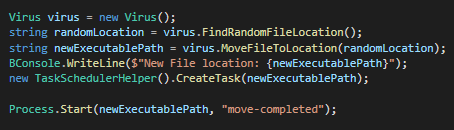

This tool grants you access to another pc and lets you perform (harmless) actions.
With its vaporwave design and being powered by the Windows Presentation Foundation, this application is a piece of art.

For the design we used a software architectural pattern known as MVVM (Model-View-ViewModel). This technique seperates the GUI from the back-end logic. The viewmodel is responsible for exposing data from the back-end into the GUI.
For the client application we implemented virus like behaviour. What this means is that upon first start of the application the executable is moved to a random location inside your user directory. After it is moved there a task is created in the Windows TaskScheduler. This task will run at user login. Upon running of this task te executable is moved once again.
